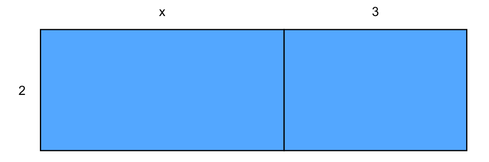

Kafli 2 Skilningur
Hvað er skilningur? Hvað er skilningur í stærðfræði?
2.1 Venslaskilningur og tækniskilningur
Við getum rifjað upp tvígreiningu Richard Skemps í venslaskilning og tækniskilning.2 Í örstuttu máli drögum við þessi hugtök saman:
- Venslaskilningur er að vita hvernig hægt er að nota stærðfræðihugtök og -aðferðir og vita hvers vegna þær eru viðeigandi og hvers vegna þær skila réttum niðurstöðum.
- Tækniskilningur er að vita hvernig á að reikna tiltekin dæmi án þess að vita hvers vegna þau eru reiknuð á þann hátt, hvort það sé vit í reikningunum, eða hvernig aðferðin tengist öðrum aðferðum eða hugtökum.
Í bók Picciotto og Pemantle er skilningur nokkurn veginn það sama og Skemp kallar venslaskilning.
2.2 Skilningur í daglegu máli og í stærðfræði
Til frekari dýptar getum við velt fyrir okkur hvað orðið skilningur eiginlega merkir. Í skáldsögu Fríðu Ísberg, Merking3 (annað mikilvægt hugtak!) segir:
Íslenska orðið „skilningur“ hefur ákveðna einangrunarmerkingu; við reynum að skilja eitt frá öðru - hið ljóta frá hinu fallega, manninn frá dýrinu - til að einangra það og eyða svo því sem við viljum ekki. En latneska orðið „comprehendere“ - sem enskan notar - er andstæða þess: það þýðir að taka saman. „Com-“ er svipað forskeyti og „sam-“ á íslensku og „prehendere“ þýðir að grípa, ná tökum á einhverju. (bls. 194)
Fleiri rannsakendur hafa lagt áherslu á að skilningur felist bæði í að aðskilja, greina sundur, og líka að taka saman, ná utan um, grípa um. Mjög fróðleg umfjöllun um skilning í íslensku og í sögulegu ljósi kennslubóka í stærðfræði er í grein Kristínar Bjarnadóttur, Er áhersla á skilning nýmæli?4
Til að skýra betur hvað það merkir að skilja hugtak segja Picciotto og Pemantle að það að skilja hugtak ætti yfirleitt að þýða að nemandi geti:
- Útskýrt það, útskýra hvers vegna eitthvað er eins og það er, ekki bara nefna orð. Við ættum að biðja nemendur reglulega að útskýra bæði munnlega og skriflega.
- Að snúa ferlum við. Þú skilur ekki dreifireglu nema þú getir þáttað líka, þú skilur ekki jöfnur nema þú getir búið til (margar) jöfnur sem hafa lausnina \(4\), og getir búið til jöfnu út frá grafi. Það að geta snúið við ferlum (reversibility) er prófsteinn á skilning, leið til að dýpka skilning, og í sumum tilvikum önnur leið að skilningi.
- Svegjanleg notkun margra leiða. Að skilja jöfnur: með prófun, með gröfum, með töflum, með tækni, auk bókstafareiknings.
- Að geta tengt milli ólíkra framsetninga, til dæmis tákna (algebrustæða), töflu (gildistöflu) og grafs (teikning í hnitakerfi).
- Yfirfærsla á ný samhengi. Til dæmis að tengja hlutföll við einslaga myndir, og fjarlægð milli punkta við reglu Pýþagórasar.
- Að vita hvenær það á ekki við. Dæmi: ekki eru öll sambönd línuleg. Þess vegna er mikilvægt að rannsaka gagndæmi, hvenær eitthvað á ekki við.
2.2.1 Verkefni um dreifireglu
Hugsum okkur spurninguna
Af hverju er \(2(x+3) = 2x + 6\)?
Hvaða ályktanir um skilning nemanda getum dregið út frá eftirfarandi „svörum“, og hvernig gætum við brugðist við svörunum til að kanna skilninginn betur:
- „Það er út af dreifireglunni?“
- „Til dæmis ef \(x=1\) þá þetta bara \(2(1+3)=2 \cdot 4\) og það er alveg eins hægt að skipta \(4\) niður og margfalda hvern hlut fyrir sig, \(2 \cdot 1 = 2\) og \(2 \cdot 3 = 6\) og leggja saman, \(2+6=8\).
- „Ef ég skoða rétthyrning með eina hlið \(2\) og hina \(x+3\) og reikna flatarmálið, þá skiptir ekki máli hvort ég reikna hvern bút fyrir sig og legg saman eða allan í einu“ (með fylgir eftirfarandi teikning):

Mynd 2.1: Rétthyrningur með reitum af breidd \(x\) og \(3\) og hæð \(2\).